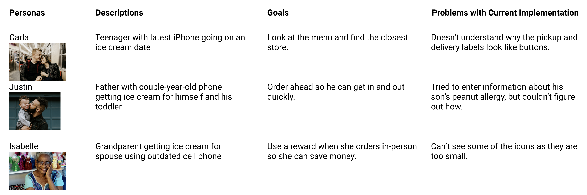

Graeter's Case Study
I am currently going through the process of redesigning the Graeter's app. Graeter's is an ice cream shop/brand based in Ohio that my family frequents.
Our local shop opened not long before I went away for college, and Atlanta doesn’t have any Graeter’s shops (though they do carry their products in a few grocery stores). When I got sent home early thanks to the pandemic, my mom and I decided to go for some \socially-distant Graeter’s. I opened up the Graeter’s app on my phone, which I had used to earn rewards a few times, but never really looked at. As I tried to figure out the process of ordering from the shop near me, I was confused.
What was the difference between curbside and pickup? Why did the word ‘pickup’ look like a really tiny button, but wasn’t clickable?
I decided to test myself by redesigning most of the app, fixing some of the problems I saw and adding some additional enhancements. I’m pretty familiar with the Starbucks app thanks to my 2+ years of working there, and I recently followed along with a video detailing the speed design of a coffee shop app, so I felt I could use this knowledge to my advantage.
Analysis of Current App
I started by screen recording myself going through most of the features of the app and pulling screenshots from times where I saw things that I particularly liked or disliked (mostly dislikes). I found a lot more things I would change from taking an analytical perspective than I had initially seen as a regular user. This could mean that not every change I make will be picked up on by the majority of users, but I think that trying to fix as many of the problems as I can would be a good way to learn about a variety of UI design techniques/subjects. My notes on each screen are shown in the image above.
Competitive Analysis

I decided to take a more in-depth look at the Graeter’s app compared to some other food apps I was familiar with, like the Starbucks and Kung Fu Tea apps. The Starbucks app is pretty streamlined and modern, with some fun touches like emojis and greetings depending on the time of day. The Kung Fu Tea app, on the other hand, is pretty maximalist with lots of bright colors and illustrations.
Personas
Here are some personas I created as part of my analysis:
Pinpointing Goals of Change
My prior analysis allowed me to think about what I want to change and what I want to keep going into the wireframing process. Here are some changes I would like to see:
- • Make more intuitive
- • Fix ‘note an allergy’ button
- • Make rewards page more dynamic (and increase question mark icon size)
- • Make icons more consistent (see ‘more’ page vs. footer vs. question mark icon on rewards page)
- • Make selected highlight in footer look more traditional (currently looks grayed out)
- • Pickup vs. curbside distinction
- • Make bottom and top navigation bars more consistent
Here are some things I'd like to preserve:
- • Classic feel (especially with fonts and color scheme)
- • Structure/flow of app
- • Layouts of most screens
I'm currently finishing up some low-fidelity prototypes of the screens I analyzed (see image above). Since I wanted to keep the structure/flow of the app pretty similar, I made my low-fidelity prototypes directly above the screenshots of the original app.